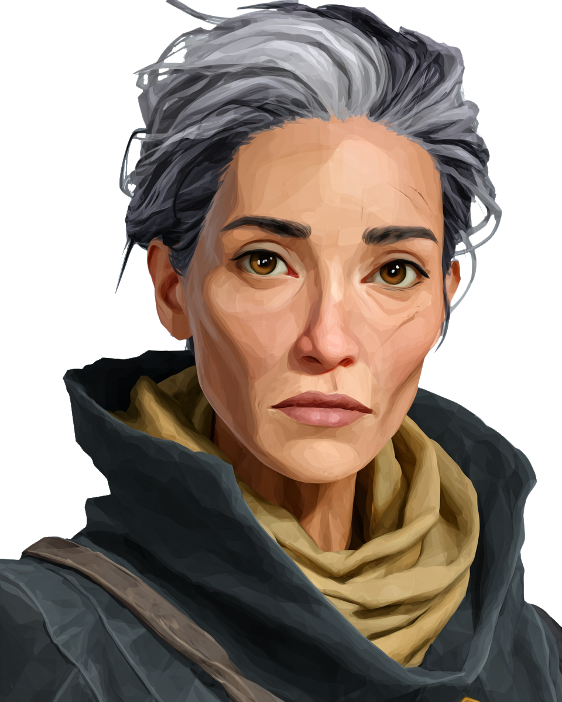
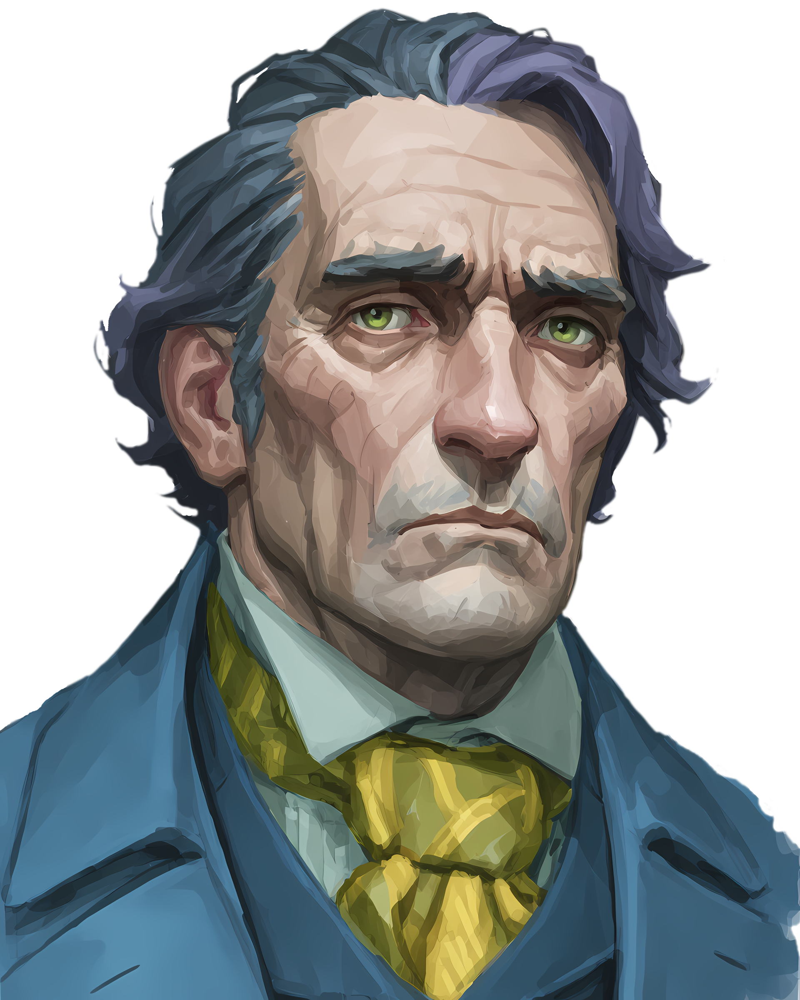
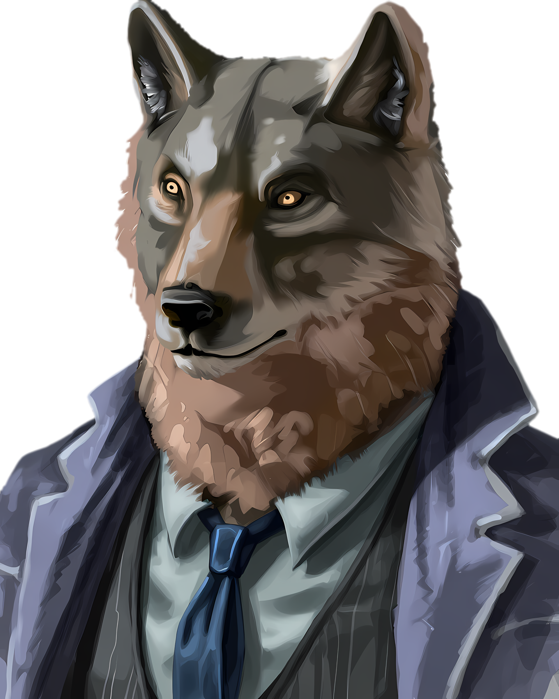
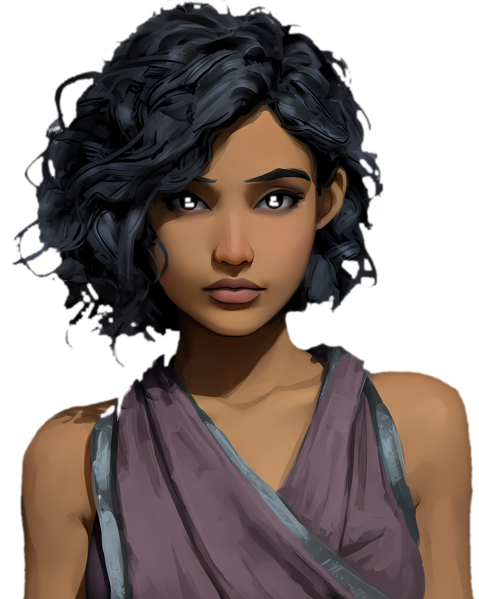
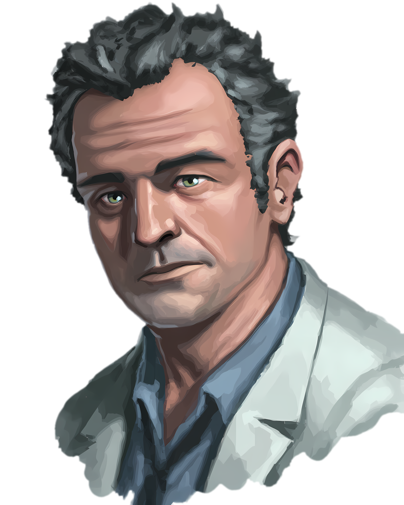
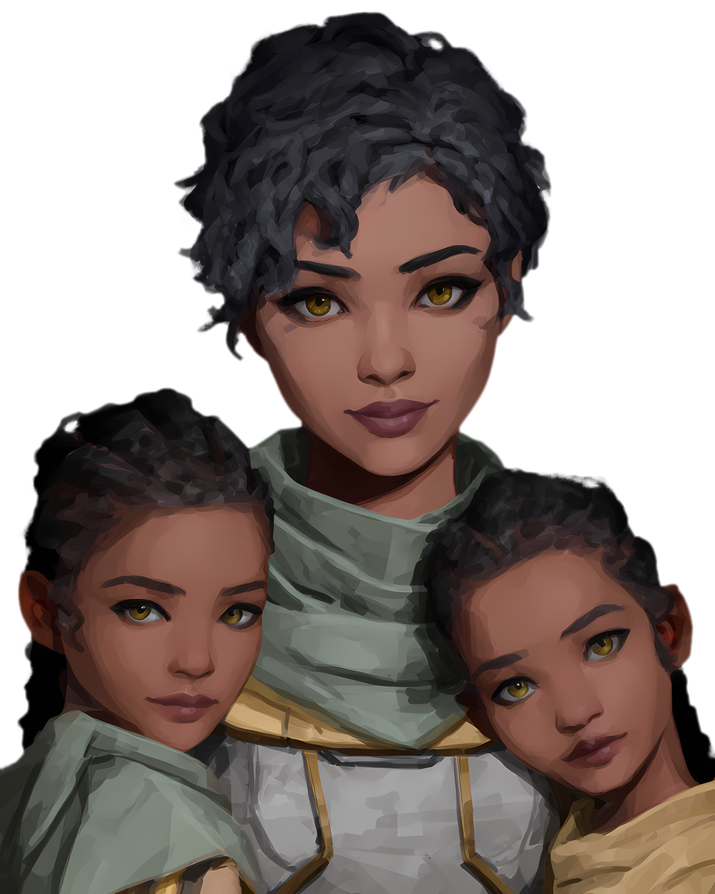

1.1 — Die Schoßkatzen des Königs
Bordbuch der Hedor, Kapitän Sekhar, Eintrag 090-1105
Mal wieder hat mich ein Auftrag von Sal Dancet in Schwierigkeiten gebracht. Aber wenigsten ist Lekhan an meiner Seite und muss das Schlamassel mit ausbaden. Eigentlich sollten wir nur unter verdeckter Identität nach Marduk fliegen, um dort eine Gruppe Wissenschaftler auf einer Reise durch den Staubgürtel zu begleiten. Kein glorreicher Auftrag, aber wenigsten bin ich dann einen Teil meiner Schulden bei Sal los und bin eine Zeit lang mit meinem Bruder zusammen.
Im Orbitalhafen der erste Ärger: ein paar halbstarke Aslan auf Kriegzug. Am liebsten hätte ich meine Faust in der Fresse dieses vorlauten Idioten versenkt, aber er war es nicht wert. Stattdessen sind wir in dieses verfluchte Shuttle gestiegen, das uns runter auf den Planeten bringen sollte. Um dort unsere Identitäten bestätigen zu lassen. Einige andere Reisende haben wir kennengelernt - vor allem Xiri mit ihren Töchtern wird mir in Erinnerung bleiben - auch wenn ich sie gern vergessen würde. Als wäre das die letzten Jahre nicht oft genug passiert, wurde auf uns geschossen und das Shuttle ist außer Kontrolle geraten. Klia, Mai und ihre Mutter sind beim Absturz ums Leben, Klia konnte ich für einen kurzen Herzschlag noch fassen bevor sie aus dem Leben gerissen wurde. Kurz zuvor hatten wir zudem den Vargr Evan Sanderson kennengelernt, dessen Spruch Richtung Xiri mir ebenfalls noch lange im Gedächtnis bleiben wird: “Ich streichele sie und ihre Kinder nicht, also streicheln sie mich bitte auch nicht!”. Auch er ist später gestorben.
Hätte Lekhan nicht mich angetrieben ins Cockpit zu gehen wäre uns das gleiche Schicksal zu Teil geworden. Doch so konnte ich das Shuttle gerade noch abfangen und in einer Steppenlandschaft zu Boden bringen. Die Tanks wurden dabei aufgerissen, der Treibstoff ausgelaufen und das hohe trockene Gras hat sofort Feuer gefangen. Wir haben die wenigen Überlebenden gerade so hinter nahen Felsen in Sicherheit bringen können, als ein Raumjäger auftauchte und nach Überlebenden suchte - wahrscheinlich Plünderer aus Oghma auf der Suche nach klugen Köpfen, um der technologischen Dunkelheit zu entkommen. Wir wussten nicht wo wir runtergekommen waren und hatten keine Möglichkeit, Hilfe zu rufen. Also blieb uns nur, Zuflucht in nahen Ruinen zu suchen. Wie es weiter geht wissen wir noch nicht…
Persönliche Notizen, Lekhan, 090-1105
Ich habe die Nachricht von Sal Dancet drei Mal gelesen. Kein Wort von Rao, keine versteckte Chiffre, kein Gruß zwischen den Zeilen, nichts. Beim dritten Mal kam ich mir langsam lächerlich vor. Als würde ihr Name plötzlich zwischen zwei Zeilen auftauchen, wenn ich nur lange genug hinsah.
Und Sal, wie üblich, lässt sich nicht in die Karten blicken und es heißt friss‘ oder stirb‘. Also begab ich mich nach Torpol, hörte mir den Auftrag an, und tat, als hätte ich nichts anderes erwartet. Der glückliche Nebeneffekt des Ganzen: Endlich vereinten sich die Wege von Sekhar und mir wieder. Was habe ich ihn vermisst, was habe ich mich gefreut! Er sieht gut aus, hat seine Piratenjagd hinter sich. Dennoch habe ich das Gefühl, dass ihm die Ruhe danach nicht bekommt, ich spüre, dass ihm etwas fehlt. Wer weiß, vielleicht dient uns beiden dieser Auftrag mehr, als er sollte?
Vollkommen unerwartet stießen wir am Orbitalhafen von Marduk drei Ihatei, kaum trocken hinter den Ohren, die uns anpöbelten. Ich hatte keine Lust auf das Zusammentreffen, aber Sekhar war binnen Sekunden noch ungefähr einen Satz davon entfernt, einem von ihnen die Zähne neu zu sortieren; ich hatte keinen Plan und redete deshalb einfach weiter. Manchmal besteht Diplomatie hauptsächlich darin, niemandem lange genug die Gelegenheit zu geben, etwas wirklich Dummes zu tun. Und Glück, gute Diplomatie braucht erstaunlich viel Glück!
Was mich mehr beschäftigte, als ihre große Klappe, war, dass sie überhaupt da waren. Drei junge Ihatei auf einer GeDeCo-Handelswelt? Kein älterer Krieger bei ihnen, keine sichtbare Führung, niemand, der sie an der Leine hielt? Jedenfalls niemand, den ich gesehen hätte. Bei Aslan bin ich aber mit meinem Halbwissen vorsichtig. Ich weiß gerade genug über sie, um zu wissen, wie sie aussehen und wie wenig ich weiß.
Auf dem Shuttle viele spannende Begegnungen, ich liebe diese kleineren, weniger stark frequentierten Flüge.
Es fing mit Xiri an und ihren beiden Kindern Mai und Klia. Xiri war schön. Normalerweise hätte ich wenigstens versucht, ihr ein Lächeln abzuringen. Aber sie hatte nicht nur zwei Kinder an der Backe sondern auch den müden Blick eines Menschen, der schon zu oft irgendwo neu anfangen musste. Also ließ ich es bleiben und versuchte mich lediglich an Aufheiterung; auch, weil Karine auftauchte.
Karine… was für Augen diese Frau hatte. Dann wurde es plötzlich kompliziert, denn Xiri und Karine kannten sich, sehr gut sogar. Auf einmal bekam dieser Shuttleflug ausgesprochen interessante Perspektiven. Bis Mai versuchte, Evan Sanderson, einen Vargr, zu streicheln, der sehr schnell klar machte, dass es hier eine Grenze für ihn gab. Dieser Evan war ein recht kratzbürstiger Vollblutjurist und ich hätte ihn gerne länger gekannt, um herauszufinden, ob ich ihn mochte oder nicht.
Dann ein Knall, überall Nebel in der Kabine und da, wo Xiri und Mai zuvor saßen, klaffte ein riesiges Loch in der Wand. Sekhar versuchte noch, Klia festzuhalten, doch sie entglitt ihm. Ich habe seinen Blick danach gesehen, das werden wir beide wohl nicht so schnell vergessen.
In Anbetracht des unkontrollierten Fluges stand er mir dennoch einen Herzschlag zu lange da. Vielleicht waren es auch zwei Sekunden. In solchen Momenten sind zwei Sekunden sehr lang. Ich habe ihn angeschrien, er solle ins Cockpit gehen. Er ging. Er fing das Shuttle ab. Wir leben. Wenn ich das so hinschreibe, klingt es wesentlich planvoller, als es war.
Später wollte ich ihm sagen, dass er nichts hätte tun können. Ich habe es nicht getan. Es klang schon in meinem Kopf wie einer dieser Sätze, die man sagt, weil man unbedingt möchte, dass der andere aufhört zu leiden. Andere Worte fielen mir nicht ein.
Jetzt sitzen wir hinter Felsen in einer namenlosen Steppe. Ein Raumjäger hat über uns nach Beute gesucht, Oghma vermutlich.
Allerdings gefällt mir die zeitliche Abfolge nicht, das wirkt zu glatt: Sal schickt uns unter falschen Namen hierher, und beim ersten Landeversuch wird unser Shuttle beschossen. Vielleicht ist das auch nur die Berufskrankheit eines (ehemaligen?) Agenten. Wenn drei Dinge schiefgehen, sucht man nach Mustern und irgendwann nach demjenigen, der dafür bezahlt hat. Ich behalte den Gedanken trotzdem erst mal für mich. Erst Beweise, dann Paranoia.
In der Ferne sind übrigens Ruinen zu sehen – auf Marduk. Demselben Marduk, das laut offizieller Reisefachliteratur auf seinem Festland unbewohnt ist. Wenn dort jemand lebt, ist das entweder eine Kleinigkeit, die niemanden interessiert, oder eine Wahrheit, die jemandem sehr unangenehm ist. Mehr, wenn wir wissen, ob wir den Morgen erleben.
Kurzfazit
- Treffen mit Sal Dancet. Sie möchte, dass wir eine Wissenschaftliche Expedition begleiten und sicherstellen, dass deren Forschungsergebnisse und Fundstücke nach Drinax und nur nach Drinax gelangen.
- Wir sollen uns in Marduk beim Büro von GeDeCo akkreditieren um die Forschungsexpedition als Pilot und Ökonom zu begleiten. Die dafür nötigen Unterlagen wurden uns von Sal Dancet zur Verfügung gestellt.
- Im Hochhafen von Marduk haben wir eine unangenehme Begegnung mit jungen Ihatei. Ihr Schiff ist die Ihaout.
- Auf dem Weg zum Büro auf dem Planeten wird unser Shuttle, vermutlich von einem Oghma-Fighter angegriffen und letztlich abgeschossen.
- Es gibt nur wenige Überlebende. Sekhar und Lekhan übernehmen das Kommando und versuchen die Gruppe durch die Steppe zu den Ruinen einer alten Stadt zu bringen.
- Oghma-Soldaten und Raubtiere jagen die Gruppe. Evan Sanderson fällt einem Raubtier zu Opfer. Der Rest schafft es in einen Vorposten der Stadt.
- In diesem Vorposten leben primitive Menschen die sich vor der herannahenden Gruppe versteckt haben.
Begegnungen
- Sal Dancet — Freihändlerin, inoffiziell im Auftrag von Drinax · Torpol, Mond des Gasriesen · langjähriger Kontakt von Sekhar
- Alexeis Drabahn — GeDeCo Hafenmeister · Marduk, Bodenhafen · ?
- Arthur O’Neil — Berufsfischer, Shuttlepassagier · Marduk · ?
- Evan Sanderson — Rechtsanwalt, Shuttlepassagier, Vargr · Marduk · zerfleischt von einem Raubtier
- Karine Lukowiak — Funk Assistenz, Shuttlepassagier · Marduk · ?
- Phynan Trevix — Geschäftsmann, Shuttlepassagier · Marduk · ?
- Xiri, Mai, Klia — Heimkehrende Familie, Shuttlepassagiere · Marduk · bei Absturz des Shuttles getötet







Orte
- Marduk, System
- Marduk, Orbitalhafen
Offene Fäden
- Alexeis Drabahn, der GeDeCo Hafenmeister hatte uns explizit den Namen des Shttles genannt mit dem wir zur Bodenstation fliegen sollten. War das Absicht, damit wir von dem Angriff betroffen sein würden?
Bezüge & Notizen
- Ein imperialer Konvoi wird in den nächsten Tagen im Raumhafen erwartet.
- Vermutlich hatte Evan Sanderson etwas mit dem Konvoi zu tun. Nach seinem Tod hat Sekhar seine Unterlagen / Datenquellen / Ausweis an sich genommen.
Nächste Sitzung
- Erhaltene Erfahrungspunkte: 1
- Ausgangslage: Überlebende des Absturzes: Arthur, Karine, Phynan, Lekhan und Sekhar. Sekhar oben an Treppe zur Wohnhöhle der Einheimischen (?), der Rest unten in der Höhle. Er hat einen Schuss auf die Raubtiere abgegeben, was die Einheimischen kurz zögern ließ. Ein Rudel Raubtiere - genannt Garinaembreight - bereitet sich zum Angriff vor.
Wissenssammlung
Ein weiterer Auftrag
Ihr dient dem Haus Drinax, seit ihr denken könnt. Eure Väter dienten ihm. Deren Väter dienten ihm, damals, bevor der Himmel brannte und die Schiffe, die euer Blut trugen, ohne euch davonflogen. Zweihundert Jahre. Ihr seid die “ausgestoßenen Aslan von Drinax” - zurückgelassen und aufgegeben vom eigenen Volk.
Lekhan, seit über acht Jahren führst du nun bereits Aufträge des Hofes aus. Du warst stolz, als man dich zu einem Agenten machte.Du hast es als Zeichen genommen: Man vertraut mir. Ich bin mehr als geduldeter Fremdkörper im Schwebenden Palast. Aber schau dir die Aufträge mal genauer an. Hier ein Kurierlauf nach Torpol. Begleitschutz für einen Getreidekonvoi nach Asim. Ein versiegelter Datenwürfel nach Acis, den du nicht öffnen durftest und der, wie du später erfahren hast, nur Handelszahlen enthielt. Dort mal das Ausspähen eines unbedeutenden Raumhafens. Und jetzt zweiundzwanzig Tage neben einem Frachter herfliegen, der nichts geladen hatte, was ein Pirat gewollt hätte.
Seit deiner Romanze mit Prinzessin Rao, bist du gefühlt immer weit weg. Immer irgendwo da draußen. Selten im Palast. Es gab eine Zeit, da schickte Rao dir direkt Nachrichten — meist kurz, präzise, ohne Anrede - machmal intim. Damals hast du getan, was sie sagte. Es hat dein Leben verändert. Die Klinge, die sie dir gab, liegt noch immer in deinem Quartier an Bord; das Metall ist älter als das Königreich, dem es gehört. Aber seit vielen Monaten kommt nichts mehr. Keine Nachricht. Keine Anfrage.
Es gibt am Hof Leute, die es aussprechen. Lady Hil hat einmal, als sie glaubte, du und dein Bruder wärt außer Hörweite, von „den Schoßkatzen des Königs” gesprochen. Lord Wrax mustert euch jedes Mal, als rechne er nach, wie viele Sterne zwischen euch und Drinax liegen müssten, damit er ruhig schläft. Und wenn eine Delegation aus dem Imperium kommt oder Konsul Poloc zum Empfang lädt, dann findet sich für euch verlässlich eine dringende Aufgabe — irgendwo anders.
Der Verdacht lässt sich nicht mehr wegdrücken: Man schämt sich eurer. Man hält dich in Bewegung und ist fast froh, dass Sekhar eigene Wege gegangen ist. Und dennoch empfindet ihr beide Dankbarkeit dem Hofe gegenüber. Er hat euch großgezogen, euch ausgebildet. Er ist das, was ihr noch am ehesten als “Zuhause” bezeichnen würdet. Und König Oleb hat euch stets gut behandelt, auch wenn ihr ihn schon Jahre nicht mehr persönlich gesehen habt.
Sekhar, nachdem du vor etwas mehr als vier Jahren alles stehen und liegen gelassen hast, desillusioniert von der zahmen Vorgehensweise der Handelsmarine, bist du nun an einem toten Punkt. Deine Crew ist nach und nach abgesprungen - keine Beute heißt keine Bezahlung. Viele sind dir zwar weiterhin loyal gegenüber eingestellt, aber sie müssen ihre Familien ernähren. So sitzt du alleine an Bord deines Freihändler, jenem einfachen Schiff mit dem du Unmögliches geschafft hast, und grübelst über deinen weiteren Weg. Deinen Bruder hast du schon länger nicht persönlich gesehen, nur über Nachrichten haltet ihr Kontakt.
Vor drei Tagen dann eine Nachricht, nicht über die üblichen Kanäle. Man möge sich im Orbit eines Mondes im Torpol System einfinden - Lekhan und Sekhar gemeinsam.
Treffen mit Sal Dancet
Ein in die Jahre gekommener, aber gut gepflegter Freihändler legt an. Seine Kapitänin kennt ihr, es ist Sal Dancet. Sie arbeitet für den Palast und ist die Frau, die Dinge beschafft, nach denen niemand offiziell fragt. Sie sieht sich in Sekhars Messe um, nickt anerkennend über den Zustand des Schiffes und legt zwei Datenkarten auf den Tisch. Ausweise. Lizenzen. Dienstbücher mit Einträgen für Jahre, die es so nie gegeben hat. Die Namen darauf sind nicht eure.
„Ihr fliegt nach Marduk”, sagt sie. „Mit diesem Schiff, aber unter anderem Namen. Zwei Freiberufler, die Arbeit suchen. Die Papiere dafür liegen dabei.”
Sie tippt auf die erste Karte und schiebt sie zu Sekhar.
„Im Marduk-System liegt ein Laborschiff im Orbit. Insight III. Vierhundert Tonnen, ein Ring mit zwei Gondeln, sieht aus wie ein Küchengerät und fliegt auch so. An Bord: eine Handvoll Wissenschaftler, auf einer Mission zur Feldforschung im Oghma-Cluster — Marduk, Borite, weiter hinaus. Bezahlt wird das Ganze über ein GeDeCo-Stipendium.” Sie macht eine kleine Pause. „Ihr Pilot ist ausgefallen. Sie brauchen bis schnellstmöglich einen Ersatz, sonst verlieren sie ihr Zeitfenster. Du wirst diesen Job übernehmen.”
Die zweite Karte zu Lekhan.
„Und du bist der Ökonom, den die Expedition beantragt und nie bekommen hat. Ressourcennutzung, Handelsströme, wirtschaftliche Auswirkungen der Feldarbeit. Deine Papiere sind vom Institut auf Asim. Sie halten einer Prüfung stand, wenn du sie nicht selbst kaputtredest.”
Sie trinkt aus, bevor sie weiterspricht.
„Der Auftrag ist kurz: Ihr bleibt bei diesem Schiff. Ihr sorgt dafür, dass die Expedition ihre Arbeit macht und dass die Leute an Bord am Leben bleiben. Und wenn diese Wissenschaftler irgendetwas finden, das aus sindalischer Zeit stammt — Metall, Daten, ein Artefakt, ein Gerücht, irgendetwas —, dann gehört das Drinax und niemandem sonst.”
Sie beugt sich vor, und ihre Stimme wird noch leiser.
„Ihr meldet nichts über irgendwelche Kanäle. Keine Funksprüche, keine Datenpakete, keine Kuriere, kein beiläufiges Wort zu einem Hafenmeister. Wenn die Sache erledigt ist, kommt ihr nach Drinax und findet mich . Wenn ich nicht da bin, wartet ihr, bis ich es bin.”
Sie steht auf.
Dann ist sie weg, und ihr sitzt vor zwei Datenkarten mit fremden Namen darauf. Ein neuer Auftrag.
Was ihr über Marduk wisst
Marduk ist kein Ziel. Marduk ist eine Zwischenstation. Ihr wart schon mehrfach dort — Kurierläufe, ein Bunkerstopp, einmal drei Tage Wartezeit auf ein Ersatzteil. Ihr kennt den Highport, wie man einen Ort kennt, an dem man immer nur wartet: nicht schön, aber vertraut.
Der Hochhafen hängt über dem Planeten wie ein zu groß geratener Umschlagplatz und besteht aus drei Armen. Der Hauptarm nimmt kleine Schiffe und Freihändler auf — dort werdet ihr liegen, dort wart ihr immer, und die Einrichtungen sind entsprechend: funktional, abgenutzt, billig. Der Kommerzielle Arm ist die bessere Adresse; dort docken die mittleren Frachter und Liner, dort gibt es Läden, Bars, Restaurants und Auktionshäuser für Ladungen, und dort geht auch der Linienshuttle zur Oberfläche — stündlich, zuverlässig, langweilig. Der Großraumer Arm kann genau zwei Großfrachter gleichzeitig abfertigen, was fast nie nötig ist; wenn imperiale Kriegsschiffe durchkommen, machen sie meist nicht einmal fest.
Und ihr kennt die Waffenregel: nur Handfeuerwaffen. Nichts, was man mit zwei Händen führt, nichts Vollautomatisches — oben wie unten. Und es gibt schlicht kein Verfahren, größere Waffen mit den Hafenshuttles nach unten zu bringen. Wer bewaffnet auf die Oberfläche will, muss das mit einem eigenen Schiff und einer Landeerlaubnis tun.
Der Tiefhafen liegt auf einer künstlichen Insel, die GeDeCo eigens vom Meeresboden aus hochgezogen hat. Die Insel ist deutlich größer als nötig und trägt außer dem Raumhafen eine kleine Stadt von ein paar tausend Menschen — die Hafenstadt — sowie einen Seehafen. Echte Raumschiffe sieht der Bodenhafen selten; fast alles läuft über den Orbit. Die Hafenstadt lebt vom Durchgangsverkehr: Bars, Unterhaltung, sonst kaum Industrie. Die Ausnahme ist die Fischereiflotte, deren Fang das halbe Essen in beiden Häfen liefert. Und eine kleine Küstenschifffahrt bedient die Nahe Küste — ein Streifen Festland mit verstreuten Farmen und Ranches, betrieben von Hafenpersonal, nicht von Einheimischen. Es ist die einzige Region des Festlands, die überhaupt erschlossen ist. Denn die Kontinente Marduks sind unbewohnt. Nur auf den vorgelagerten Inselgruppen leben einige Tausend Bewohner.
Die Welt ist erdähnlich, atembar, wasserreich, und sie trug einst eine große Bevölkerung mit Städten. Beim Zusammenbruch des Sindal-Imperiums wurden diese Städte in einem der vielen Kriege zerbombt. Was danach kam, wird unterschiedlich erzählt, und vermutlich ist an jeder Version etwas dran: radioaktiver Niederschlag, Hunger, Seuchen natürlichen und weniger natürlichen Ursprungs. Das Festland entvölkerte sich, und als die verbliebenen Menschen unter eine kritische Zahl fielen, starben sie über die Generationen einfach aus. Die Kontinente gelten seither als tabu.
Überlebt haben nur die Menschen auf den Inselgruppen — mehrere Archipele, je ein paar tausend Seelen, technologisch weit zurückgefallen und voneinander isoliert. Sie meiden Kontakt mit Fremden und untereinander so gründlich, dass sich getrennte Kulturen und teils vollständig eigene Sprachen entwickelt haben; die Sprache einer anderen Gruppe zu lernen gilt als verboten. Ihre einzige regelmäßige Berührung mit der Außenwelt sind Überfälle aus Oghma — was ihre Neigung zu Gastfreundschaft nicht gefördert hat. Manche greifen Besucher sofort an. Die meisten verschwinden einfach: Landet ein Schiff bei einem Dorf, ist das Dorf leer, wenn man es erreicht.
Oghma liegt ein Parsec entfernt. Dort herrschen Kriegsherren, die noch Sprung-1-Schiffe bauen können, und sie überfallen ihre Nachbarn — Marduk und Borite — vor allem nach Technikern: Leuten, die ihre Maschinen am Laufen halten. Dazu Schiffsteile und alles, was sich sonst tragen lässt. Ihre Überfälle sind plötzlich und brutal, aber sie kooperieren schlecht; meist kommt ein einzelnes Schiff, selten eine Handvoll. Sie haben gelernt, dem Raumhafen und der Reichweite seiner Geschütze fernzubleiben. Nur weiß in den Häfen auch jeder, wie schmal dieser Schutzschirm ist: Er deckt Bodenhafen, Hafenstadt und die Farmen der Nahen Küste. Sonst nichts.
Und GeDeCo — die General Development Corporation — hat ihr das Sagen, auch wenn sie offiziell nur “Entwicklungshilfe” leisten. Sie hat den Hafen vom Meeresboden aus gebaut, um den Handel auf der Sindalischen Kette zu bedienen, sie betreibt ihn, sie stellt die Regeln auf. Die Zollkontrollen sind lax, solange man über den Orbit einreist oder einen Landecode vorzeigen kann. Was ihr über den Konzern hinaus wisst, ist wenig und stammt aus Hafenklatsch: dass GeDeCo in der ganzen Weite Häfen und Handelsposten betreibt, dass es sich gern als Zivilisationsbringer darstellt — und dass Leute, die sich mit der Hafenverwaltung anlegen, plötzlich Lizenzprüfungen, Werftinspektionen und Termine bekommen, die sich über Wochen ziehen.
Auf Marduk sind Aslan nicht unwillkommen — GeDeCo-Häfen sind offen für jeden, der zahlt —, aber Gespräche werden leiser, wenn ihr eine Bar betretet, und Hafenbeamte prüfen eure Papiere ein zweites Mal. Ihr habt euch daran gewöhnt.
Logbuch-Übersicht
- 1.4 — Notruf der Jolly Joel · 24.10.2026
- 1.3 — Streit in Borite · 11.10.2026 · in-game 091-1105
- 1.2 — Willkommen in der Wissenschaft · 29.08.2026 · in-game 091-1105
- ▸ 1.1 — Die Schoßkatzen des Königs · 01.08.2026 · in-game 090-1105
- 0.2 — Charaktererschaffung - Hauptcharaktere · 11.07.2026
- 0.1 — Charaktererschaffung - Nebencharaktere · 07.07.2026